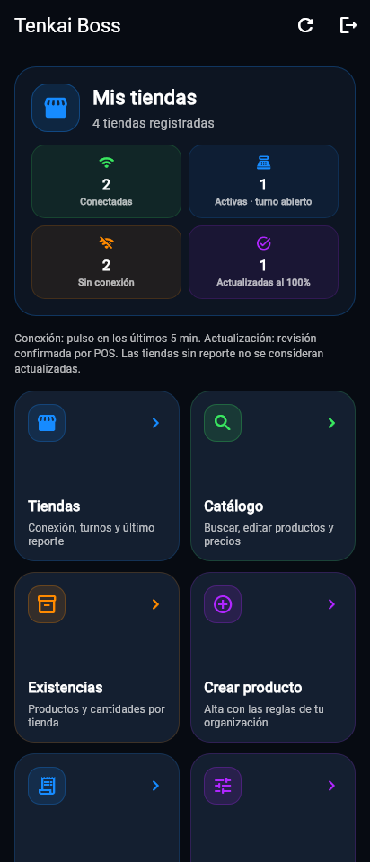
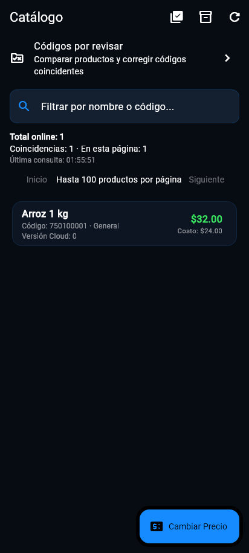

Tecnología para el comercio de todos los días
El tiempo de
tu tienda
vale más.
Menos trabajo repetido. Más control sobre tu mercancía, tus cajas y tus sucursales. Descubre una forma más clara de trabajar con Tenkai.


Atiende con fluidez.
Tickets, caja y productos al alcance de tu equipo.
Recibe con orden.
Prepara mercancía desde el celular y envía el lote.
Decide con información.
Revisa tu tienda y las sucursales que ya reportaron.
Un ecosistema, tareas bien definidas
Cada herramienta tiene
un trabajo que hacer.
Empieza con el punto de venta y agrega las aplicaciones que resuelven tus tareas diarias.
Tenkai POS
El centro de tu negocio
Cobra, controla tu mercancía y entiende tus resultados desde un mismo lugar. La operación principal trabaja en tu computadora, incluso cuando no tienes internet.
Explorar POSTenkai Inventory
De la bodega a la tienda
Lleva tu catálogo en el celular. Cuenta y prepara la mercancía en la bodega, aunque no haya señal. Al llegar a la tienda, conecta con POS, revisa el lote y confirma la entrada sin volver a capturar cada artículo.
Explorar InventoryTenkai MultiPos
Más cajas para atender
Agrega una terminal para atender a más clientes. Cada cajero trabaja con su sesión, mientras el POS principal concentra catálogo, cobros, inventario y resultados.
Explorar MultiPosTenkai Resguardo
Continuidad preparada
Prepara otro dispositivo con una copia autorizada del catálogo. Durante una contingencia registra ventas y movimientos; cuando vuelva el POS, envía lo pendiente para su revisión y conciliación.
Explorar ResguardoTenkai Boss
La vista del dueño
Consulta qué sucursales están conectadas, revisa sus existencias y operaciones y administra productos y precios desde tu celular. Boss trabaja junto con el servicio Sync para llevar tus cambios a las tiendas.
Explorar BossTenkai Sync
Una política de precios
Conecta los POS de tus sucursales con Boss. Distribuye cambios del catálogo y recibe reportes para que el dueño supervise qué información llegó y qué tiendas ya la aplicaron.
Explorar SyncEl recorrido que cambia tu surtido
La lista ya está hecha.
Deja de capturarla dos veces.
El dueño selecciona y cuenta la mercancía en la bodega. Inventory conserva esa lista en el celular, incluso sin señal. Al llegar a la tienda, la envía al POS y el encargado revisa la entrega.
La recaptura artículo por artículo deja de ocupar la caja. El equipo puede concentrarse en atender, revisar y acomodar.
Conocer el recorrido de Inventory- 01
Prepara en la bodega
Productos y cantidades, en tu celular.
- 02
Guarda sin señal
Un lote identificado para cada tienda.
- 03
Conecta al llegar
Revisa la entrega y confirma la recepción.
- 04
Comprueba y acomoda
Consulta el resultado en POS y el historial.


Boss + Sync · piloto
Más de una tienda.
Una visión más clara.
Administra productos y precios desde un lugar. Revisa cuáles tiendas están conectadas, cuáles tienen el catálogo actualizado y qué reportaron.
Si una sucursal pierde internet, su operación principal sigue localmente. El cambio remoto se confirma cuando recupera conexión y lo aplica.
Todo explicado
Aprende a tu ritmo.
Guías para configurar, conectar y usar cada aplicación. Desde la primera venta hasta la mercancía offline.
Empecemos por tu negocio
Haz espacio para un mejor día de trabajo.
Cuéntanos cómo trabajas. Te ayudamos a elegir las aplicaciones y módulos que necesitas.